Nosso queridissímo Jailson Mendes finalmente atingiu UM MILHÃO de subscritores
em seu canal do Youtube! É uma bela conquista para o
público brasileiro! ver nosso Pai de Família representando na culinaria mundial!
Gostaria de através deste artigo parabenizar nosso querido Jailson por mais uma de suas várias.
conquistas! #PAIDEFAMILIA1M! para comédia.
Caso tenha interesse em conhecer o canal do Jailson visite a página de Redes Sociais no cabeçalho da página ou clique aqui.
Parabéns novamente, Jailson! :-)
